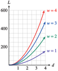

Subsection 6.4 Graphs
It is possible to make graphs in three dimensions for functions of two variables, but we will not do that here. Instead, we will represent such functions graphically by holding one of the two variables constant.
Example 6.4.9.
In Example 6.3.7, we found a formula for the load a beam can support,
Graph \(L\) as a function of \(w\) for \(d = 1, 2, 3,\) and \(4\text{.}\)
Graph \(L\) as a function of \(d\) for \(w = 1, 2, 3,\) and \(4\text{.}\)
-
We make four graphs on the same grid, one for each value of \(d\text{:}\)
\begin{equation*} \begin{aligned}[t] \text{when } d \amp= 1, \amp\amp L = 10w \\ \text{when } d \amp= 2, \amp\amp L = 40w \\ \text{when } d \amp= 3, \amp\amp L = 90w \\ \text{when } d \amp= 4, \amp\amp L = 160w \end{aligned} \end{equation*}The graphs are shown at left below. We can see that \(L\) varies directly with the width of the beam for any fixed value of its depth.
 -
We make one graph for each value of \(w\text{:}\)
\begin{equation*} \begin{aligned}[t] \text{when } w \amp= 1, \amp\amp L = 10d^2 \\ \text{when } w \amp= 2, \amp\amp L = 20d^2 \\ \text{when } w \amp= 3, \amp\amp L = 30d^2 \\ \text{when } w \amp= 4, \amp\amp L = 40d^2 \end{aligned} \end{equation*}The graphs are shown at right above. For any fixed value of its width, \(L\) varies directly with the square of depth.
Checkpoint 6.4.10.
The period of a satellite orbiting the Earth varies directly with the radius of the orbit and inversely with the speed of the satellite.
Write a formula for the period, \(T\text{,}\) as a function of orbital radius, \(r\text{,}\) and velocity, \(v\text{.}\)
GPS satellites orbit at an altitude of \(20,200\) kilometers and a speed of \(233\) kilometers per second. The period of a GPS satellite is \(11\) hours and \(58\) minutes. Find the constant of variation in your formula for \(T\text{.}\) (The radius of the Earth is \(6360\) km.)
Satellites in polar orbits are used to measure ozone concentrations in the atmosphere. They orbit at an altitude of \(300\) km and have a period of \(90\) minutes. What is the speed of a satellite in polar orbit?
Graph \(T\) as a function of \(v\) for \(r = 5000\text{,}\) \(r = 10,000\text{,}\) \(r = 20,000\text{,}\) and \(r = 30,000\text{.}\)
\(T=f(r,v)=\dfrac{kr}{v} \)
\(k\approx 6.3\text{.}\) (Actually, \(k=2\pi\text{.}\))
\(58\) km/min